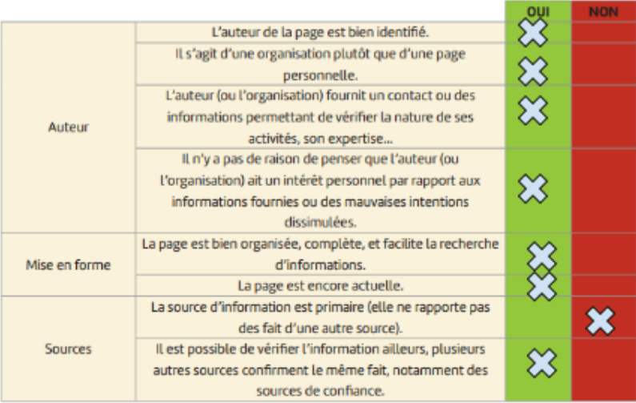

Question objet de recherche : l’homéopathie n'est-t-elle qu’un placebo ?
Les concepts, informations, mots clé à rechercher pour répondre à la question : homéopathie - mémoire de l’eau - théorie - preuves scientifiques - effet placebo
L'affaire de la mémoire de l'eau : une controverse scientifique <-- Cliquez sur le lien pour en savoir plus
Efficacité de l'homéopathie : que dit la science? <-- Cliquez sur le lien pour en savoir plus
L’homéopathie n'est-t-elle qu’un placebo ?
“L'homéopathie est un sujet controversé dans le domaine médical et scientifique. Certains considèrent que l'effet de l'homéopathie est principalement dû à l'effet placebo, tandis que d'autres soutiennent qu'il existe des mécanismes spécifiques qui ne peuvent pas être expliqués uniquement par l'effet placebo. L'homéopathie est fondée sur le principe de la similitude, c'est-à-dire que des substances qui provoquent des symptômes chez une personne en bonne santé peuvent, lorsqu'elles sont diluées à des niveaux extrêmement élevés, traiter des symptômes similaires chez une personne malade. Cependant, les dilutions utilisées en homéopathie sont souvent si élevées qu'elles ne contiennent plus de quantités mesurables de la substance originale. Sur le plan scientifique, cela pose des questions sur la plausibilité et l'efficacité de ces traitements. De nombreuses études scientifiques ont été menées pour évaluer l'efficacité de l'homéopathie. Les résultats sont souvent mitigés, avec certaines études montrant des effets bénéfiques au-delà de l'effet placebo, tandis que d'autres ne trouvent aucun bénéfice significatif par rapport à un placebo. Certains professionnels de la santé estiment que l'effet ressenti par les patients suite à un traitement homéopathique peut être attribué à des facteurs tels que l'attention et le temps accordés par le praticien, plutôt qu'à une efficacité intrinsèque des substances homéopathiques. En conclusion, bien que certaines personnes soutiennent les effets bénéfiques de l'homéopathie, la plupart des preuves scientifiques disponibles jusqu'à présent ne permettent pas de confirmer son efficacité au-delà de l'effet placebo. Cela reste un sujet de débat et de recherche dans les milieux médicaux et scientifiques.”
Analyse de la réponse de chatgpt: Aucune source n’est citée, on ne sait pas d'où sont issues les informations qu’il fournit. On ne peut donc pas confirmer la fiabilité des informations fournies.
On voulait savoir si l’homéopathie est vraiment efficace ou si elle ne se limite qu’à un placebo. Les trois sources que nous avons étudiées nous donnent tout d’abord des informations sur le contexte d’apparition du concept de l’homéopathie ainsi que les expériences menées par les chercheurs. Cependant, aucune source n’affirme réellement que cette méthode thérapeutique est efficace, elles mettent toutes en avant les avis partagés concernant la question. Donc cette recherche nous a juste permis d’en savoir plus sur l’homéopathie sans pouvoir savoir si cette méthode est efficace ou non. Nous pensons que cette méthode de traitement n’est pas efficace, puisque la plupart des preuves scientifiques disponibles jusqu'à présent ne permettent pas de confirmer son efficacité au-delà de l'effet placebo.